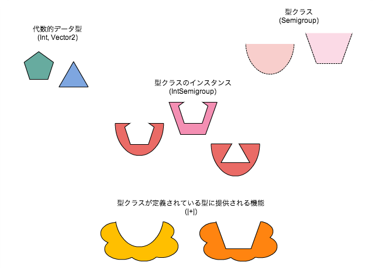

2014/01/08 エンジニア勉強会 - 西岡寛兼
ひとまず「関数型」の部分を無視して、とても楽に書けるJavaとしてScalaを使うことができます。
Better Javaでも、今すぐJavaを捨て去るだけの価値が
あります。
JavaコードをScalaに置き換えると、コード行数がだいたい1/3〜1/2になると言われています。
ただし・・・
Better JavaではScalaのポテンシャルを半分も引き出せてないです。もったいない！
自分はBetter Javaでよくても、例えばOSSライブラリを使うときには、Better Javaでは使えなかったり、ソースを読めなかったりします。これは避けられない・・・
ということで・・・
関数型プログラミング
Functional Programming
やりましょう
注) ここでは静的型付け関数型言語を扱います。単に「関数型」と表現していますが、静的型付け関数型言語のことを指していると思ってください。
オブジェクト指向から関数型に移行するのは、ただ新しい言語を学ぶのとは違います。
OOP未経験者がOOPを使いこなすには考え方そのものをオブジェクト指向にしなければならないように、FP未経験者がFPを使いこなすには関数脳にする必要があります。
FizzBuzz
※ただし、突飛な書き方はなしであくまで"普通に"書く前提で。
1. 1から100までカウントアップしながらループ
I. 変数の剰余演算結果で条件分岐
i. 仕様に合わせて出力
→手続き型脳
Int => String
これだけ！
Int値から表示用の文字列を得る関数があればいい。
作りたいプログラムの本質を関数で捉える。
val fizzBuzz: Int => String =
val fizzBuzz: Int => String = {
case i if i % 15 == 0 => "FizzBuzz"
case i if i % 5 == 0 => "Buzz"
case i if i % 3 == 0 => "Fizz"
case i => i.toString
}と、思われるかもしれませんが、ぶっちゃけそんなの興味の対象じゃないんですよね。
とはいえそれじゃ仕様満たしてないと言われそうなので書いときますよ。
(1 to 100) map fizzBuzz foreach println関数が第一級オブジェクト(First Class Object)だからです。
これ説明したいんですけど、すごい抽象的な話になってしまいますので、頑張ってついてきてね☆
1. 1から100までカウントアップしながらループ
I. 変数の剰余演算結果で条件分岐
i. 仕様に合わせて出力
トップダウン
Int => String
これ、FizzBuzzのボトムですよね。
なんでここから考えることができるかというと、呼び出す側を事前に考えておかなくても、関数を値として定義しておけば、あとでいかようにも使える自信があるから。
(1 to 100) map fizzBuzz foreach printlnほら、実際に使えてるでしょ。標準ライブラリだけで。
ここまでが抽象的な話
ここから具体的なコードと共に、
Scala白魔法を紹介していきます。
ちなみに「黒魔術」と表現する人もいますが、
より安全で保守性の高いコードにする技術なので、
紛れも無く白魔法です。
以前日報でこんな主張をしました。
僕が考えるオブジェクト指向の最もダメなところは、「クラス内に隠蔽されているから」という免罪符のもとデータと処理が密結合になるところなんですね。
なので、ここでは静的型付け関数型言語でデータと処理を疎結合に保つ書き方をお見せしようと思います。
それぞれの代数的データ型の値には、1個以上のコンストラクタがあり、各コンストラクタには0個以上の引数がある。
なんのこっちゃ。
case class Color(red: Int, green: Int, blue: Int)
// Javaのこれとほぼ同じ
@lombok.Value
public class Color {
int red;
int green;
int blue;
}sealed trait RGB
case object Red extends RGB
case object Green extends RGB
case object Blue extends RGB
// Javaのこれとほぼ同じ
public enum RGB {
Red, Green, Blue;
}sealed trait RGB
case class Red(hoge: Int) extends RGB
case class Green(piyo: String) extends RGB
case object Blue extends RGB
// そろそろJavaでは書きたくないsealed trait JsonValue
case class JObject(values: Map[String, JsonValue]) extends JsonValue
case class JArray(values: List[JsonValue]) extends JsonValue
sealed trait PrimitiveJsonValue extends JsonValue
case class JInt(value: Int) extends PrimitiveJsonValue
case class JString(value: String) extends PrimiriveJsonValue
// Java・・・( ´Д｀)=3アドホック多相 を実現するもの
アドホック多相とは異なる型の間で共通したインターフェースでの異なる振る舞いを定義済みの型に対して拡張するような多相
"型クラス" = "型に関する性質" = "処理のテンプレート"
例：「足し算ができる」という性質
trait Semigroup[A] {
def append(a1: A, a2: A): A
}実際の処理は「型クラスのインスタンス」に実装する。
例：Int型のSemigroup型クラスのインスタンス
implicit object IntSemigroup extends Semigroup[Int] {
def append(a1: Int, a2: Int): Int = a1 + a2
}これを定義することにより、「Int型は足し算することができますよ」と宣言したことになる。
もちろん自作の代数的データ型に対して型クラスのインスタンスを定義することもできます。
case class Vector2(x: Double, y: Double)
implicit object Vector2Semigroup extends Semigroup[Vector2] {
def append(a1: Vector2, a2: Vector2): Vector2 =
Vector2(a1.x + a2.x, a1.y + a2.y)
}性質を定義したのはわかった。
データと疎結合なまま定義できているのもわかった。
で、それどうやって使うの？
scala> 3 |+| 5
res0: Int = 8
scala> Vector2(1, 2) |+| Vector2(4, 5)
res1: Vector2 = Vector2(5.0,7.0)登場人物をまとめるとこんな感じ
さらに、型クラスは継承関係を作ることもできます。
trait Monoid[A] extends Semigroup[A] {
def zero: A
}「足し算ができる」という性質(Semigroup)に加え、零元を持つという性質も持つ型クラス。
先ほどのIntSemigroup、Vector2Semigroupを以下に置き換えます。
implicit object IntMonoid extends Monoid[Int] {
def append(a1: Int, a2: Int): Int = a1 + a2
def zero: Int = 0
}
implicit object Vector2Monoid extends Monoid[Vector2] {
def append(a1: Vector2, a2: Vector2): Vector2 =
Vector2(a1.x + a2.x, a1.y + a2.y)
def zero: Vector2 = Vector2(0, 0)
}もちろんMonoidとSemigroupは継承関係にあるので、Semigroupの性質を持っていれば使えた機能は、Monoidが定義されている場合でも使えます。
scala> 3 |+| 5
res0: Int = 8
scala> Vector2(1, 2) |+| Vector2(4, 5)
res1: Vector2 = Vector2(5.0,7.0)ここからもう少し型クラスの本領見せていくよ。
Monoidは「足し算ができる・零元がある」という性質ですが、Monoidが定義されている型に提供される機能はその2つにとどまる必要はありません。
つまり、足し算ができて、零元があるならば可能な処理は、全てのMonoidに機能として提供することができます。
例えば、「足し算ができて、零元ある」ならば、Listに格納された要素の合計を計算することができます。
def sum[A: Monoid](l: List[A]): A =
l.foldLeft(implicitly[Monoid[A]].zero)(_ |+| _)
scala> sum(List(1, 2, 3))
res0: Int = 6
scala> sum(List(Vector2(1, 2), Vector2(3, 4)))
res1: Vector2 = Vector2(4.0,6.0)このsumメソッドはMonoidを要素に持つListであれば要素の型は何であっても適用することができますが、もしMonoidでない要素を持つListがsumメソッドに渡されると、コンパイルエラーになります。つまり「誤ってMonoidでない要素を持つListをsumに渡してしまった」というバグは発生しません。
case object NotMonoid
sum(List(NotMonoid, NotMonoid))
error: could not find implicit value for evidence parameter of type Monoid[NotMonoid.type]さて、お待たせしました
ただの型クラスの1つです。
「足し算ができる性質」みたいにわかりやすく簡単な日本語で表せないので、難しそうに見えますけどね。
最初は「何か値を入れるコンテナ」だと思うのがいいかもしれません
慣れてくると「モナドは文脈だ」と思うのがしっくりくるようになってきます
1つだけ、さっきのMonoidと違うところがあるので先に。
例えばList[_]などがM[_]になれる
Monad[M[A]]は以下の2つの関数を持つ
point: A => M[A]
bind: (A => M[A]) => M[A] => M[A]この2つの関数は以下の条件(Monad則)を満たす
bind(f)(point(a)) == f(a)
bind(point)(m) == m
bind(g)(bind(f)(m)) == bind({ x => bind(g)(f(x)) })(m)覚えなくてもいいですｗ
モナド則の意味を完全に理解する必要は全くありませんが、あえて本質だけをかいつまんで表現すると
「Mに包んだままAに対して実行する処理」のMonoid
0 + a = a
a + 0 = a
(a + b) + c = a + (b + c)Semigroupの|+|やMonoidのsumのように、Monadに提供される機能もあります
M[A].flatMap: (A => M[B]) => M[B]
M[A].map: (A => B) => M[B]mapとflatMapの活躍はこのあと紹介します
モナドを使ってみよう
値が1つだけある状態 or 値が無い状態 を表すコンテナ
sealed trait Option[A]
case class Some[A](a: A) extends Option[A]
case class None[A]() extends Option[A]例えばScala標準のMap.getはOptionを返します
scala> val m = Map(1 -> "a", 2 -> "b")
m: scala.collection.immutable.Map[Int,String] = Map(1 -> a, 2 -> b)
scala> m.get(1)
res0: Option[String] = Some(a)
scala> m.get(0)
res1: Option[String] = NoneMapから取り出した値に対して何らかの処理をしたい
でも本当に使いたい値はOptionに包まれてる
この中身を、Optionに包まれたまま処理したい
そんなときはモナドに提供される機能を使います
M[A].map: (A => B) => M[B]例えば取得した文字列を大文字にする
scala> m.get(1).map(_.toUpperCase)
res0: Option[String] = Some(A)
scala> m.get(0).map(_.toUpperCase)
res1: Option[String] = Noneもし合成する処理の途中で値がなくなる可能性がある場合は
val m1 = Map(1 -> 'a', 2 -> 'b')
val m2 = Map('a' -> "aaa", 'c' -> "ccc")
scala> m1.get(1).flatMap(m2.get _)
res0: Option[String] = Some(aaa)
scala> m1.get(0).flatMap(m2.get _)
res1: Option[String] = None
scala> m1.get(2).flatMap(m2.get _)
res2: Option[String] = None値が1つある or 値がない のいずれかを表す代数的データ型
mapやflatMapを使って、
「コンテナに包まれた値に対する処理」を合成する型クラス
値がある限り合成された処理を継続し、
値が無くなった時点で後続の処理は無視する
という実装をされた型クラスのインスタンス
ごめんなさい。資料ここで力尽きました・・・
時間と元気があれば他のモナドも紹介していきます。